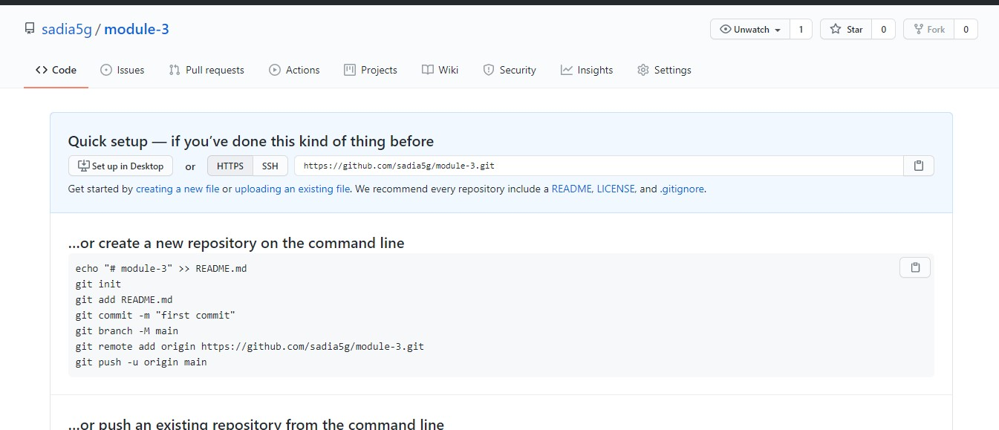

প্রথমে github.com এ যাবো সেখানে গেলে দেখতে পাবোডান্সাইটে উপরের দিকে প্লাস তারপর সেখানে গিয়ে আলাদা কাজের জন্য আলাদারি পোজিটরি বানাতে হবে । তাই new repository তে ক্লিক করতে হবে। তারপরে একটা নাম বসিয়ে creat my repository তে ক্লিক করতে হবে । ক্লিক করলে নিচের ছবির মত কিছু একটা পাওয়া যাবে। প্রথম বার সেই রিপোজিটরি খুলতে গেলে এমন পাওয়া যাবে। নিচের কোড গুলা এপ্লাই করলে কাজ হয়ে যাবে । এপ্লাই করার সিস্টেম হলো tarminal খুলে একেক্টা লাইন শেষে ইন্টার বাটনে চাপ দিলেই কাজ হয়ে যাবে। এপ্লাই করার কিছু নিয়ম আছে সেগুলা হলো । echo "# module-3" >> README.md ১ম লাইনে এইটা । ২য় লাইনে git init । ৩য় লাইনে git add README.md এটা থাকলেও এটা দিলে কাজ হবে না git add . এটা লিখতে হবে এভাবেই ডট সহ। ৪র্থ লাইনে git commit -m "first commit" এটা দিতে হবে তবে এখানে ডাবল কোটেশনে গিয়ে আমাদের গুরুত্ত পুর্ন ফাইলের নাম দিব ।এটা দিতে গিয়ে ইরোর দিলে আমাদের, ৫ম লাইনে গিয়ে git config --global user.email "sadiaislamila@gmail.com" এটা দিতে হবে ও ৬ষ্ঠ লাইন গিয়ে git config --global user.user "sadia islam" এমন কিছু একটা দিতে হবে । তবে ৫ ও ৬ নম্বর লাইন শুধু মাত্র এক বার মানে কম্পিউটারে প্রথম বার লাগে পরের বারে এগুলো চাইলে লাগবে না চাইলে লাগবে না । এবার ৭ম লাইনে এসে আবার git commit -m "first commit" এটা দিতে হবে তবে এটা প্রথমেই কাজ করলে আমরা ৫,৬ নাম্বার স্কিপ করব । ৮ম লাইনে এটা লিখে git branch -M main ইন্টাল প্রেস করতে হবে । ৯ম লাইনে গিয়ে git remote add origin https://github.com/sadia5g/module-3.git লিখে ইন্টর প্রেস করা লাগে । ১০ম লাইনে গিয়ে git push -u origin main গিয়ে ইন্টার প্রেস করব।
এবার কডিং করার শেষে আবার মানে মাঝে মাঝেই কড পুস করতে হবে github এ ।এখন কিন্তু বার বার আগের কাজ করা লাগবে না। নিচের ছবিতে যতটুকু আছে শুধু এই টুকু ব্যবহার করতে হবে। যেমনঃ ১ম লাইনে git add . লিখতে হবে তারপর ইন্টার ক্লিক করব। ২য় লাইনে git commit -m "first commit" এটা দিতে হবে তবে এখানে ডাবল কোটেশনে গিয়ে আমাদের গুরুত্ত পুর্ন ফাইলের নাম দিব । ৩য় লাইনে গিয়ে git push লিখে ইন্টার দিতে হবে। এটা যতবার করে নতুন নতুন কোড করব ততবার এটা লিখতে হবে tarminal এ গিয়ে
Github এর মাধ্যমে কিভাবে লাইভ সার্ভারের লিংক তৈরি করা যায় বা অন্য কাউকে পাঠিয়ে দেখানো যায়? প্রথমে settings এ ক্লিক করব এর ভিতরে গিয়ে পেজের নিচের দিকে স্ক্রল করে দেখব github pages এটাতে ক্লিক করব , এখানে আরেকটা লিংক ওপেন হবে সেখানে গিয়ে ২য় লাইনে none ক্লিক করে main সিলেক্ট করে দিতে হবে save এ ক্লিক করতে হবে । এবার github pages এ একটা লিংক শো করবে । সেই লিংক টাতে ক্লিক করলে সাইট লাইভ হয়ে যাবে।
এবার নতুন ভাবে যে কোড বা ইমেজ গুলো যোগ করেছি সেটা github এ পাঠাব তাই এবার আবার নতুন করে আমাদের লিখতে হবে terminal এ গিয়ে git add . এবার ইন্টার প্রেস করে git commit -m "first commit" লিখে ইন্টার প্রেস করে লিখতে হবে git push লিখে ইন্টার দিতে হবে। এভাবে যতবার কোড পাঠাতে যাবো github এ ততবার এই ৩টা জীনiজিনিয়বহার করতে হবে terminal এ